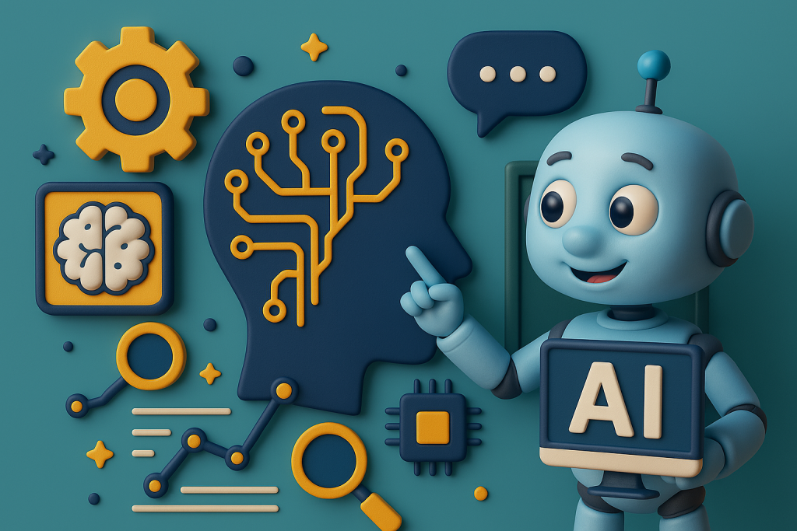

INTELIGENCIA ARTIFICIAL · EQUIPO 6
La inteligencia es artificial.
El criterio es tuyo.
Una guía para usar la IA con curiosidad, cuidar tus datos y tomar decisiones que puedas explicar.

Aprender con IA también implica verificar, proteger y reconocer.
UNA RUTA EN CUATRO PASOS
Herramientas nuevas, decisiones conscientes.
La ética de la IA trata de cómo nuestras decisiones afectan a otras personas. Explora cada tema y termina con una revisión de tus propios hábitos.
¿Qué significa usar IA de forma ética?
Mantener el control humano, considerar los efectos en otras personas y poder explicar nuestras decisiones. La UNESCO propone un enfoque centrado en derechos humanos, equidad y transparencia.